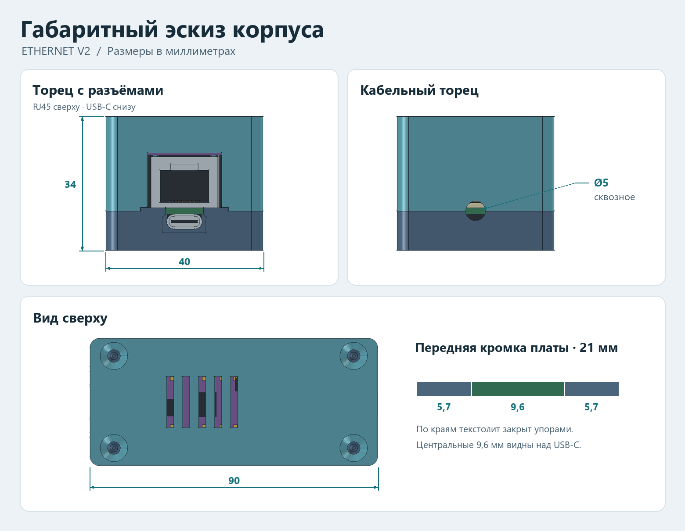
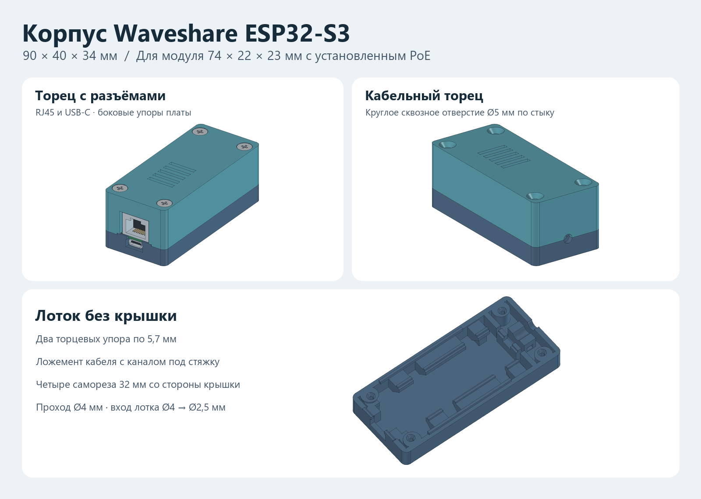
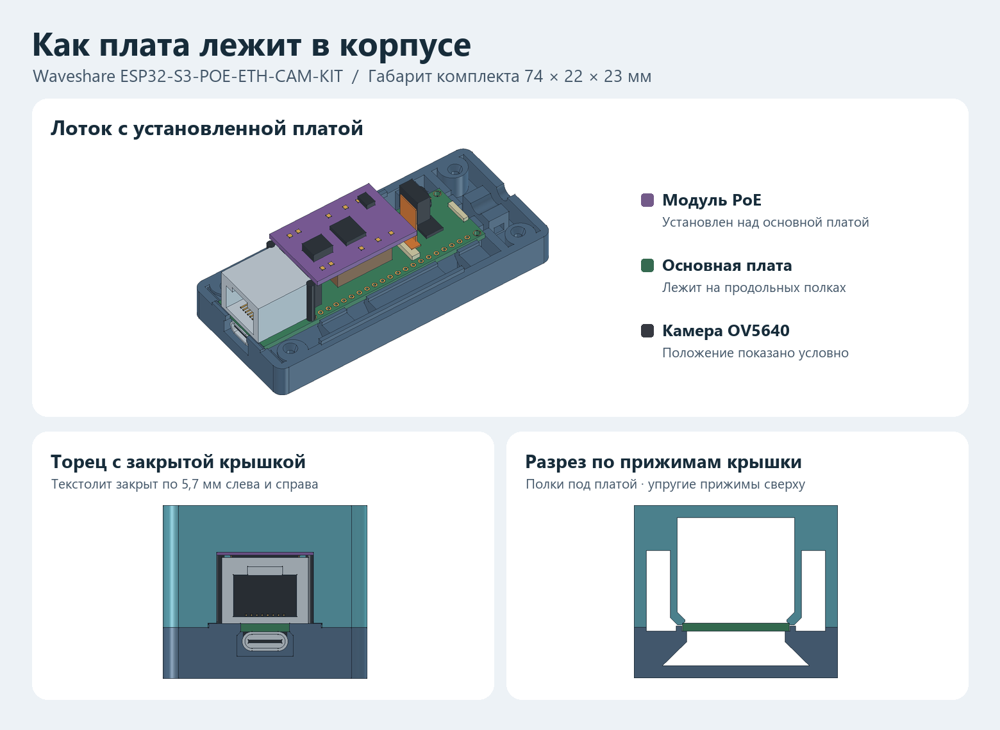
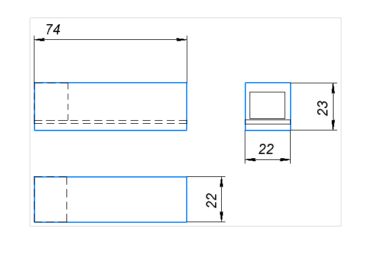
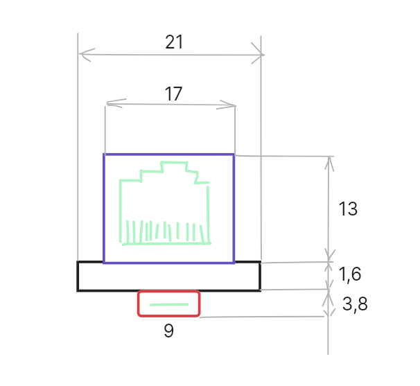

Файлы проекта
Эскизы и виды корпуса





Размеры и конструкция
| Элемент | Размер |
|---|---|
| Собранный корпус | 90 × 40 × 34 мм |
| Габарит комплекта с PoE | 74 × 22 × 23 мм |
| Основная плата | 72,84 × 21 × 1,6 мм |
| Стенки, дно и верх крышки | 2,4 мм номинально |
| Окно RJ45 | 19 мм по ширине, снизу боковые упоры |
| Окно USB‑C | 11 мм в нижней части |
| Видимый участок торца платы над USB‑C | 9,6 мм по ширине |
| Кабельный ввод | Ø5 мм сквозной |
Торец с разъёмами
RJ45 расположен над USB‑C. Два боковых упора закрывают по 5,7 мм переднего торца текстолита. Центральный участок над USB‑C виден в просвете шириной 9,6 мм.
Упор при тяге за Ethernet
Передняя кромка платы упирается в два боковых упора, связанные рёбрами с дном лотка. Площадь осевого упора по модели — 16,7 мм². Усилие рывка на печатной детали ещё не измеряли.
Посадка платы
Плата лежит на продольных полках вдоль обеих длинных кромок и на задней полке. При закрытии четыре упругих прижима крышки поджимают кромки сверху. Над макетом PoE остаётся 3,2 мм. В крышке пять вентиляционных щелей.
Кабельный торец
Плоскость стыка проходит через ось отверстия Ø5 мм. При сборке кабель укладывается в ложемент лотка и фиксируется стяжкой шириной 2,5 мм.
Печать и сборка
Ориентация STL
Размеры заданы в миллиметрах. Лоток лежит дном на столе, крышка перевёрнута наружной плоскостью к столу. Обе модели уже ориентированы по плоскости Z = 0. Геометрия рассчитана на FDM-печать из PETG без поддержек. Над каналом для стяжки в лотке есть мостик 3,2 мм.
Крепёж
Четыре потайных самореза полной длиной 32 мм, диаметр у головки около Ø3,3 мм, диаметр головки около Ø8,25 мм, шаг резьбы 2 мм. В крышке сквозные проходы Ø4 мм и потаи Ø8,6 мм. В лотке вход на первых 2 мм конически сужается с Ø4 до Ø2,5 мм, дальше идёт пилотный участок Ø2,5 мм. Саморезы нарезают резьбу прямо в стойках лотка.
Порядок сборки
- Направьте разъёмы к переднему торцу и опустите плату с установленным PoE на продольные полки. Проверьте, что кромки лежат на полках и разъёмы попали в проём.
- Уложите кабель в ложемент заднего торца. Проведите стяжку через канал и зафиксируйте кабель.
- Посадите крышку на направляющие лотка. Вставьте четыре самореза сверху и затяните их до посадки головок в потай.
В модели принят угол потая 90° и длина 32 мм от верха головки до кончика. При такой посадке под кончиком остаётся около 1,8 мм до наружной плоскости дна. Перед затяжкой сверьте длину и посадку своего крепежа.
После первой печати из лотка удалили четыре тонкие защёлки. В обновлённой модели плату поддерживают полки, а при закрытии её поджимают выступы крышки. Положение камеры OV5640 показано приблизительно. Для оптического окна потребуется привязка к реальному объективу.
Исходные эскизы модуля



